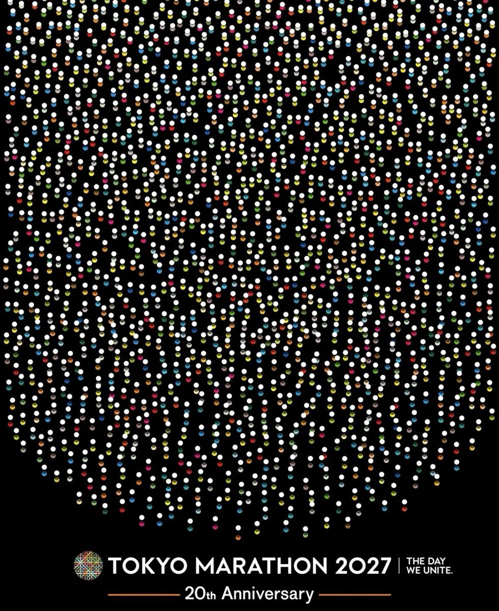

绿色杯子千尋醬喵～😦😨😰🥵
@qianxunchan
@smiroyama @Technology80420 再好的设计师做的领导都不选有什么办法😣😖
改改改对就按照 ppt 那种大气好看还多人喜欢😋

Smirnova 🏳️⚧️🍡
@smiroyama
日本民众（还有我这个在中中国人）对极简设计的接受度极高，这需要时间沉淀。我们缺的不是好设计师，而是敢于拍板“极简”的决策者。答案不是“赶超”，而是“破局”。当中国品牌愿意为“观念”买单，而不是为“热闹”买单时，就是赶超的开始。 https://t.co/wBqC52Y7Et